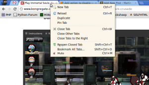
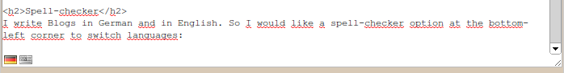
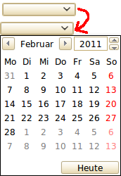
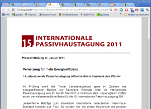
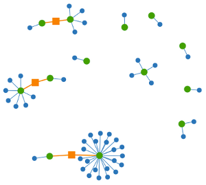

Google Chrome is the browser of my choice. It is fast, has developer tools and looks great. But it could be improved. I'll describe some features I miss.
Disable sound for tabs
Sometimes I watch a movie while I play a flash game. Some flash games don't offer an option to mute them. So I would like to get the possibility to disable sound for one tab.
It could look like this.
{kind=link}

Spell checker
I write Blogs in German and in English. So I would like a spell-checker option at the bottom-left corner to switch languages:
{kind=link}

HTML5 Form Elements
HTML5 brought many cool new form elements to the web. If you like, take a look at my list of HTML5 input types. Chrome should support all of them! Note that Chrome does support these types according to html5test.com. But I can't see any difference between type=url and type=text. That's not supporting the new types!
By the way, at the moment Chrome scores 385 points + 13 bonus points. The best browser currently scores 425 points + 25 bonus points.
{kind=link}

Internal PDF-Reader
{kind=link}

Rotate PDF
Some PDF files I receive are rotated by 90°. It would be great if I could, as in every PDF viewer, rotate this. A common shortcut is Ctrl+Arrow key.
Page numbers
It would be great, if I could enter the number of the page I want to view. For example in the URL by adding "#123" for page 123.
Security
Extensions
Auto-Disable extensions for https. Only PayPal, Amazon, Ebay, GMail and my bank accounts work with https. I don't need my addons for these sites and I would appreciate if I could auto-disable them for https.
Password Reuse Visualizer
Firefox offers a tool which helps to identify passwords, that get reused often. It is called "Password Reuse Visualizer" and looks like this:
{kind=link}

Material
I've used famfamfam slik icons. For the menus I've used Sans, 14pt, no hinting but Antialiasing. If someone has better options, it would be great if you posted it as a comment.
If you just want to see if your problem has already been submitted, go to the issue-list.